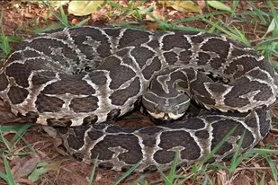

Venenosas
Bothrops Alternatus (Crucera, Yarará o Víbora de la Cruz)
Tamaño:
Su tamaño oscila entre 25 y 150 cm.
Patrón:
Color de fondo castaño, según el individuo, puede ser claro o muy oscuro.
Países:
Es endémica de Brasil, Bolivia, Paraguay, Uruguay y Argentina
Comportamiento:
No es una serpiente agresiva, ataca sólo si se siente amenazada.
Hábitat:
Habita zonas bajas, pajonales, esteros, bañados, campos y montes, junto a cuerpos de agua.
Alimentación:
Su dieta se basa en mamiferos pequeños, y en algunas ocaciones reptiles y aves, asi como anfivios y antropodos tambien.
Veneno:
Sus morderduras son raramente fatales,



Bothrops pubescens (Crucera, Yara, Yarará o Víbora de la Cruz)
Tamaño:
Es poco robusta, de entre 22 y 92 cm de longitud
Patrón:
Color de fondo castaño grisáceo, puede ser claro u oscuro.
Países:
Se distribuye por el sur de Brasil y gran parte del territorio Uruguayo
Comportamiento:
Esta especie se caracteriza por su nerviosismo
Hábitat:
Se la encuentra en zonas serranas, pedregosas y...
Alimentación:
Se alimenta de artópodos, reptiles, anfibios y roedores.
Veneno:
Al igual que la crucera sus morderduras son raramente fatales.
Micrurus altirostris (Coral, Víbora de Coral, Serpiente Coral)
Tamaño:
Esta serpiente mide entre 18 y 80 cm
Patrón:
En la serpiente de coral...
Países:
Se distribuye en Brasil, Uruguay y noreste de Argentina.
Comportamiento:
Este tipo de reptil puede llegar a ser
Hábitat:
Habita zonas arenosas, pedregosas y praderas, en campos altos. Sus hábitos son subterráneos.
Alimentación:
La dieta de la serpiente de coral
Veneno:
Tiene la capacidad de inyectar un potente veneno
Crotalus durissus terrificus (Cascabel)
Tamaño:
LLega a medir entre 140 y 160 cm
Patrón:
La caracteriza el apéndice córneo que exhibe en el extremo de la cola
Países:
Esta especie se puede encontrar en al sur de la selva amazónica de Brasil, extremo sureste de Perú, Bolivia, Paraguay, Uruguay y el norte y centro de la Argentina.
Comportamiento:
Es una especie relativamente agresiva, pero como suele agitar su "cascabel" antes de morder, la víctima potencial queda advertida de su presencia.
Hábitat:
Habita zonas de campo o monte sucio, preferentemente pedregosas.
Alimentación:
Se alimenta casi exclusivamente de mamíferos, especialmente roedores.
Veneno:
Los síntomas de envenenamiento